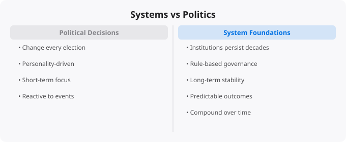

People who study economic history for long enough eventually notice a pattern: the countries that achieve sustained prosperity and development are not necessarily the ones with the most charismatic leaders, the most sophisticated ideologies, or the most passionate political movements. They are the ones with robust systems — rule of law, property rights, independent institutions, market mechanisms, and transparent governance — that function consistently regardless of who is in power at any given moment.
This observation challenges a common intuition. Most political discourse focuses on individuals and their ideas: this leader is better than that one, this party has better policies than that one, this ideology is correct and that one is wrong. But the evidence from comparative economic development suggests that the quality of systems — the institutional infrastructure within which political and economic activity occurs — matters more than the specific people or parties that occupy positions of power.
Systems, in this context, refers to the stable institutional structures that define how power is exercised, how property rights are protected, how contracts are enforced, how information is distributed, and how conflicts are resolved. The rule of law means that laws apply equally to everyone including those in power, that contracts are enforced predictably, and that property cannot be arbitrarily seized. Independent institutions — courts, central banks, regulatory agencies, free press — provide checks on the abuse of power and ensure accountability. Market mechanisms — price signals, profit motive, competition — allocate resources efficiently when properly supported by institutional infrastructure.
The presence or absence of these system features explains more of the variation in economic outcomes across countries than any other single factor. This is the core insight of the institutional economics literature, developed by economists like Douglass North (Nobel Prize winner) and elaborated in books like Why Nations Fail by Daron Acemoglu and James Robinson.
Singapore in 1965 was a tiny island city-state with no natural resources, high poverty, and uncertain prospects after separation from Malaysia. Today it is one of the wealthiest countries in the world, with per capita income comparable to the richest European nations. What happened? Singapore developed extremely strong institutional systems: predictable rule of law, very low corruption, efficient bureaucracy, strong property rights, free trade and investment policies, and meritocratic governance. These systems attracted investment and talent, enabled business formation and growth, and provided the stability that allows long-term planning.
The political form was not democratic in the conventional Western sense — Lee Kuan Yew's People's Action Party dominated Singaporean politics for decades. But the institutional quality was high: laws were enforced impartially, contracts were honored, corruption was genuinely prosecuted, and policies were evaluated on results rather than ideology. The specific political arrangements mattered less than the quality of governance and institutional function.
One of the most common misconceptions in both public discourse and investor behavior is that political change — elections, change of government, new policies — necessarily produces significant economic change. Sometimes it does. But often it does not, because the underlying systems remain intact regardless of who wins elections. A country with strong institutions, rule of law, and established market mechanisms will typically continue to function reasonably well across different governments because the systems constrain what any individual government can do and ensure continuity of basic economic functions.
Conversely, a country with weak institutions — where laws are selectively enforced, contracts are unreliable, corruption is endemic, and the economy depends on the discretion of powerful individuals — will continue to have economic problems regardless of how often governments change, because changing who holds power does not change the underlying institutional weakness.
For investors, this systems perspective has concrete implications. Institutional quality is one of the most important long-term determinants of investment returns in any country. Countries that are improving their institutional quality — strengthening rule of law, reducing corruption, improving regulatory transparency, deepening capital markets — tend to be good long-term investment destinations even if their current economic situation is imperfect. Countries where institutional quality is deteriorating — where rule of law is being undermined, where regulatory discretion is increasing, where property rights are less secure — may look attractive in the short term based on raw growth metrics but carry underappreciated long-term risks.
For India specifically, the trajectory of institutional quality — the independence of courts and regulators, the consistency of policy application, the ease of doing business and enforcing contracts — is a crucial variable for long-term investment prospects. The structural growth story is compelling, but it depends on institutional quality supporting and enabling that growth rather than undermining it.
The systems perspective also has implications for personal decisions. Choosing to live in or build a career in a place with strong systems — where education quality is reliable, where work contracts are enforced, where meritocracy operates reasonably well — compounds over a lifetime in ways that the short-term comparisons miss. The person who builds skills that are valued in high-quality institutional environments has access to opportunities that compound in value over decades. Thinking about the quality of the systems you operate within — professionally, geographically, institutionally — is as important as thinking about the specific decisions you make within those systems.
← Back to BlogThe concepts covered in this article form part of a larger body of knowledge that compounds as you build on it. Real understanding comes not from reading alone, but from applying these ideas in practice — building projects, making mistakes, debugging problems, and iterating. Every concept here is a doorway to a deeper topic worth exploring further. The most effective way to move forward is to pick one idea that resonated most and go deeper: find a hands-on exercise, build something small that uses the concept, or teach it to someone else. Teaching is one of the most powerful learning techniques — explaining a concept clearly reveals exactly where your own understanding has gaps.
Technology learning is a long game. The professionals who build the most capability over time are not those who learn the fastest in any single week, but those who learn consistently over years. Building a daily habit of reading, practicing, and building — even just 30 to 60 minutes a day — compounds dramatically. The journey from beginner to professional is measured in years, not weeks, but the direction matters more than the speed. Keep moving forward.
Disclaimer:
This article is written for educational and informational purposes only.
It does not provide financial, legal, investment, or professional advice.
Cloud services, pricing, security, and practices may vary by provider,
region, and use case. Always verify information from official
documentation before making decisions.
Reading about markets is not investing. Understanding market theory is not making money. The gap between knowledge and results in investing is filled by the practice of forming independent views, testing them against reality, and updating your thinking when evidence contradicts your expectations.
Developing a genuine market view requires: choosing 2-3 indicators to follow consistently rather than tracking dozens superficially, reading primary sources (earnings reports, central bank statements, economic data releases) rather than just media commentary, maintaining an investment journal where you record your reasoning when making decisions, and reviewing that reasoning 6-12 months later to understand where your thinking was right or wrong.
Weekly routine (30 minutes):
Monday: Review portfolio performance vs benchmark
Tuesday: Read one company annual report (if stock investor)
Wednesday: Check economic calendar for key data releases
Thursday: Review Fed/RBI communications from that week
Friday: Journal -- what happened this week vs expectations?
Monthly routine (2 hours):
Review asset allocation vs targets
Rebalance if any asset class drifted more than 5%
Read one investment book chapter or whitepaper
Review all open positions and thesis validity
Quarterly routine (4 hours):
Portfolio review: what worked, what did not, why?
Tax optimization check
Update financial goals
Read one earnings season summary for key companiesMarkets in liquid, public securities are highly efficient at incorporating publicly available information. Reading the same Bloomberg article, watching the same CNBC segment, and following the same analysts as millions of other investors does not give you an informational edge. By the time you read it, the market has likely already priced it in.
Where individual investors can have a genuine edge: patience (most institutional investors face quarterly performance pressure that prevents holding through temporary weakness), sector expertise (knowing an industry deeply as a practitioner gives real insight), tax efficiency (individual investors can optimise for after-tax returns in ways institutions cannot), and behavior (simply not panic selling during drawdowns outperforms most active strategies).
Beginners think about investing as picking the stocks that will go up the most. Experienced investors think about risk management first -- ensuring that mistakes do not destroy the portfolio's ability to recover and compound. The most important risk management principles: never invest money you will need within 5 years, diversify across asset classes and geographies, avoid leverage (borrowed money amplifies both gains and losses), and size positions so that being completely wrong on any single investment does not materially damage the portfolio.
Standard financial planning guidance: build a 3-6 month emergency fund first. Then invest 10-20% of gross income, increasing toward 20%+ as income grows. For aggressive wealth building, aim for a 30-40% savings rate. Invest consistently regardless of market conditions -- time in the market beats timing the market.
Investing is deploying capital for long periods (years to decades) based on fundamental value creation. Trading is buying and selling over shorter timeframes based on price movements. Most retail investors who attempt trading underperform a simple index fund. Investing in low-cost index funds consistently outperforms most active strategies over 10+ year periods.
Start with NIFTY 50 or NIFTY 500 index funds via SIP (Systematic Investment Plan) through any major AMC or broker. Index funds provide diversification, low costs, and performance that matches the market. Add direct equity only after you have at least 6-12 months of investing experience and genuine time to research individual companies.